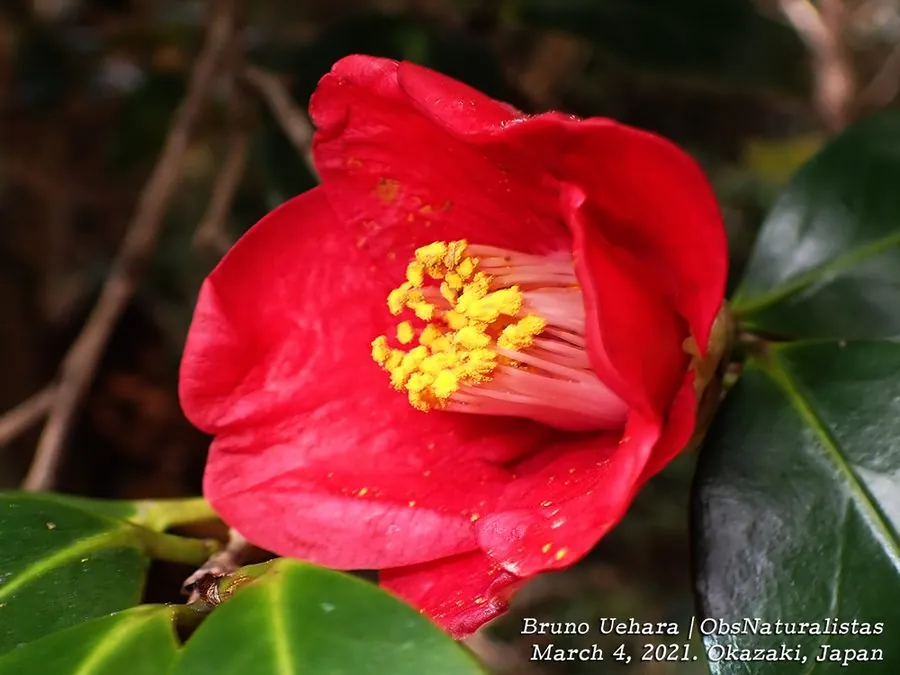

灌木与花木 · 植物界
山茶 Camellia japonica

原产中国的常绿灌木或小乔木，冬季至春季开花，花大色艳、品种繁多，种子可榨油，是世界著名的观赏花木。
- 分类
- 门被子植物门纲木兰纲目杜鹃花目科山茶科属山茶属
- 栖息环境
- 海拔 1000 米以下的山坡林缘与溪畔，喜温暖湿润和半阴环境
- 地理分布
- 原产中国长江流域及日本，云南、浙江、福建等地广泛栽培
- 保护级别
- 暂无评估；中国未列入国家重点保护野生植物名录
物种志
山茶为常绿灌木或小乔木，高可达 9 m，树皮灰褐色，枝条光滑；叶片互生，椭圆形，革质，表面深绿有光泽，边缘具细锯齿。花期 1–4 月，花单生或 2–3 朵生于枝顶或叶腋，花径 6–12 cm，花瓣 5–7 枚，有红、粉、白等色，重瓣品种繁多；蒴果球形，成熟时开裂，内含 1–3 粒深褐色种子。
山茶原产中国长江流域及日本，喜温暖湿润与半阴环境，适宜肥沃、排水良好的酸性土壤，不耐寒也不耐酷暑。它是中国传统名花，栽培历史逾千年，品种达上万个，云南山茶、华东山茶与茶梅各有特色；山茶花象征高洁与谦逊，也是云南大理、浙江温州等地的市花。种子可榨油，供食用与工业用；木材细致，可制器具；花与根可入药。
形态与习性
- 株高可达 9 m，树皮灰褐色
- 花期1–4 月，冬春开花
- 果期9–10 月，蒴果球形
- 光照喜半阴，忌强光暴晒
- 水分喜湿润，忌积水
- 土壤酸性壤土，pH 5.0–6.5
- 主要用途观赏花卉、种子榨油、花与根入药
趣味知识
- 山茶的叶片革质光亮、边缘有细锯齿，冬季开花，是少见的冬春观花木本。
- 山茶品种多达上万个，云南山茶以花大、色艳闻名，茶梅则植株低矮。
- 山茶种子可榨油，茶籽油可供食用，也可用于制皂和润滑油。
- 山茶花是云南大理的市花，也是中国传统十大名花之一。